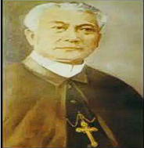

Jose Rizal - Life, Family, Childhood, and Early Education (Group - 3)
| Jose Rizal | |
|---|---|

A 1901 photograph of Rizal at age 35
|
|
| Born | |
|
June 19, 1861 Calamba, Laguna, Spanish Philippines |
|
| Died | |
|
December 30, 1896 (aged 35) Bagumbayan Field, Manila, Spanish Philippines |
|
| Other names | |
| Pepe,[1] Dr. Jose Rizal | |
| Occupation | |
| Polymath, writer, poet, novelist, educator, scientist, linguist, traveler, satirist | |
| Known for | |
|
Noli Me Tangere El Filibusterismo Filipino nationalism |
|
| Parents | |
|
Francisco Mercado (father) Teodora Alonso (mother) |
|
| Awards | |
| National Hero of the Philippines |
Jose Protacio Rizal Mercado y Alonso Realonda (June 19, 1861 – December 30, 1896) was a Filipino nationalist, polymath, and poet during the Spanish colonial period of the Philippines.[2] He is considered the national hero (Bayani) of the Philippines.[3] An intellectual and reformist, Rizal's works advocated for reforms in the Philippines during Spanish colonial rule.[4]
Contents
Identity
Dr. Jose Protacio Rizal Mercado y Alonso Realonda was born on June 19, 1861 in Calamba, Laguna. He was baptized on June 22, 1861.
He was the seventh of eleven children. During his birth, his mother, Doña Teodora, had difficulty because Rizal had a large head. Fr. Collantes even predicted that the child would someday become great.
Meaning of His Name
His full name reflects his heritage and family lineage:
- Jose – from Saint Joseph
- Protacio – from Saint Protacio (Feast day: June 19)
- Rizal – from "Ricial" meaning green of young growth
- Mercado – from Domingo Lam-Co (Chinese ancestor), related to "market"
- Y – means "and"
- Alonso Realonda – from his mother's family name
- Pepe – from P.P. (Pater Putative) of Saint Joseph
Family
Parents
Francisco Mercado (Don Kiko)

Born on May 11, 1818 in Biñan, Laguna. He studied Latin and Philosophy and later became Cabeza de Barangay of Calamba. He was known as a model father and provided Rizal with a good education.
Teodora Alonso Realonda (Doña Teodora)

Born on November 8, 1826 in Manila. She was well-educated and studied at Colegio de Santa Rosa. She was Rizal's first teacher and taught him how to read and write, instilling in him a love for learning from an early age.
Siblings
Jose Rizal had ten siblings:
- Saturnina (Neneng) – helped finance Rizal's studies in Europe.
- Paciano – Rizal's only brother, later became a revolutionary general.
- Narcisa (Sisa) – found and marked Rizal's grave.
- Olimpia (Phia) – helped with Rizal's letters to Leonor Rivera.
- Lucia – married Mariano Herbosa.
- Maria (Biang) – mother of Mauricio Cruz, Rizal's student.
- Concepcion (Concha) – died at age 3; Rizal's first sorrow.
- Josefa (Panggo) – member of Katipunan.
- Trinidad (Trining) – kept Rizal's "Mi Ultimo Adios".
- Soledad (Choleng) – youngest and Rizal's favorite sister.


Uncles
Three influential uncles helped shape Rizal's development:
- Uncle Jose – inspired Rizal's love for art and nature.
- Uncle Gregorio – encouraged his love for education.
- Uncle Manuel – trained him in physical and athletic skills.


Early Education
Rizal first studied under private tutors. One of them was Leon Monroy, who taught him Spanish and Latin. His mother, Doña Teodora, was his first teacher, teaching him how to read and write.
He later studied in Biñan, Laguna under Maestro Justin Aquino Cruz, where he learned various subjects including Spanish, Latin, and mathematics.
Although he experienced bullying and fights during his early schooling, these experiences shaped his belief that education should be a safe place for growth and learning.
He continued his higher education at the Ateneo Municipal de Manila, where he graduated with honors, and later studied at the University of Manila.
Exposure to Injustice
Rizal's mother, Doña Teodora, was unjustly accused and imprisoned on charges that were later proven to be false. She was forced to walk 50 kilometers from Calamba to Santa Cruz, Laguna, as punishment.
This painful event opened Rizal's eyes to the injustices of Spanish rule, greatly influencing his future fight for reforms and his belief in the power of education to bring about change.
This experience, along with other injustices he witnessed in colonial Philippines, motivated him to write his famous novels Noli Me Tangere and El Filibusterismo, which exposed the corruption and abuse in Spanish society.
Myths and Misconceptions
Several myths and misconceptions have surrounded Rizal's life and works. Below are three notable ones:
Myth 1: The “Sa Aking Mga Kabata” Poem
It is commonly believed that Rizal wrote the poem “Sa Aking Mga Kabata” at the age of eight. However, many historians question this claim due to inconsistencies in language usage, particularly the use of the letter “K,” which was not widely used during his childhood years.
Myth 2: The Champorado Story
Another popular myth claims that Rizal invented champorado. While this story is often shared in schools and informal discussions, there is no solid historical evidence to support that he created the dish.
Myth 3: The Tsinelas Anecdote
The story of Rizal losing one slipper in the river and throwing the other one after it is widely told to show his values and mindset. However, like many childhood stories about historical figures, this anecdote is considered more of a legend than a verified historical fact.